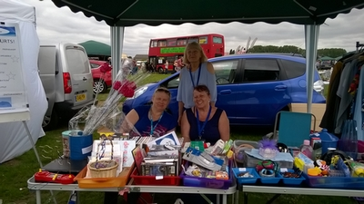
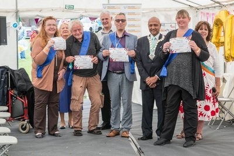
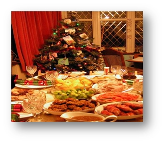
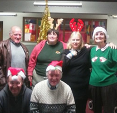
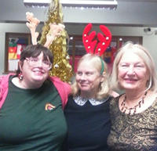
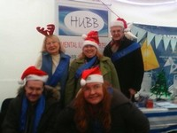
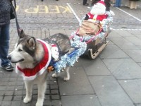
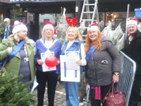

Our informative monthly newsletter is sent to every HUBB member via
email (or post for people who do not have access to a PC), keeping in
touch with those who cannot attend meetings.
Wings and wheels event 2017
We managed to raise £52.72 in total but then we minus fees for the
wings and wheels event. We had a Hubb stall, four of our members
attended. It was a nice day but quite tiring.

The Hubb stall at the event
Havering volunteers award day 2017

Hubb volunteers being awarded at the event
Every year volunteers in the borough of Havering get recognised for
their hard work, in 2017 our members were able to be acknowledged and
received their certificates from the Volunteer Centre. We are also
very proud of our volunteers for without them there would be no Hubb
for we are managed entirely by unpaid volunteers.
Christmas 2017

We had a real party this month! A hall full of good friends and
welcome visitors, live music, games, a big Christmas buffet, gifts and
the raffle. So many lovely donations of goodies too, for which we are
very grateful.Special thanks to Gary's friend Dr Square getting
us singing along to his guitar, to Gemma for managing the catering,
& to Lynda for organising the Paper Planes contest. Thanks also to
Andrew & Marcus in the kitchen, to Ruby for the Christmas Tree,
Hazel who kept the Register all evening & to Henry for both
chairing and the hoovering - & for presenting Dinah with a lovely
bouquet which is still in bloom at home. Finally, blessings to Steve
the Church warden for giving us extra time to clear up!
Christmas 2016
Main news of the week is that Hubb met on the 1st December, 2016 for
Christmas. We had a record attendance. Many of our members made
donations of food or money for food and raffle prizes.

Some of our members, Rachel the Chair as well as Nick our
researcher

Rachel, Cassie and Dinah
Christmas promotional event - 2016
On the 16th December, 2016 some of our trustees and committee members
arrived on a cold morning in Romford for a charity show under the ice
skating marquee. There were lots of other charities and members of the
public walked round and spoke to the charity members to find out more,
we had some visitors and Hazel and hubby stood outside the marquee
handing out leaflets.
We met a friendly dog on our day of which there are some pics. All
committee and trustee members are wearing our blue sashes

Some of the Hubb volunteers

Dog and sleigh at Romford

Hubb team with the Deputy Mayor of Romford